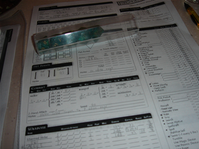
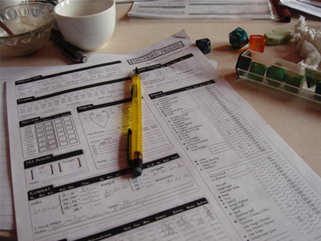
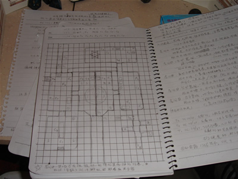

作者：我知道有点短- -但是...对于一个26号才看到征文活动通知的人来说......第一次写...不知道形式对不对...
这是第一次跑团的记录- -大家还不太会玩...所以角色特点大概还不是很明显...




{kind=link}
{kind=link}
{kind=link}
{kind=link}
{kind=link}
{kind=link}
{kind=link}
故事开始在深水城附近的一个叫做乌玛丘陵的小镇.
动荡之年才刚刚过去几十年, 费伦大陆才刚刚恢复有平静, 就像此刻的小镇一样, 和平而又忙碌. 精灵的爱与美之神海耶莉. 瑟拉尼尔的牧师路克尔此刻正坐在弯短剑酒店里, 边用着早餐, 边注意听着酒馆里客人们相互传言的新闻, 边阅读着自己手中的歌颂爱与美的书卷(言情小说).
正在牧师享用这悠闲的上午的时候, 酒馆走进了一位客人, 她是位半身人, 以半身人的标准来看,她大约三尺的身高已经算得上是大个子了, 不过这还不是引起牧师注意的地方, 令牧师路克尔惊讶的, 是她遮住上半部面庞的黑色面具. 也许是因为路克尔向来喜好与人交流, 他马上站起身邀请明显是异乡来客的半身人姑娘坐在自己桌边.
这位高大的半身人小姐, 请问您来自何方 又如何称呼呢
我叫拉薇妮娅, 来自遥远的国度, 并且我不想透露.
您有没有兴趣喝上一杯啊 我请您很好的烈酒.
半身人令人吃惊地答应了牧师的邀请, 而路克尔则给自己点了杯葡萄酒. 拉薇妮娅一饮而尽, 却在烈酒的猛烈作用下醉了过去, 路克尔品着自己的红酒, 惊讶地说哎呀, 这位小姐的酒量看起来不行啊...
正在这时候, 路克尔听到了窗外传来的喊叫的声音.
路克尔从酒馆的窗户往声音的方向看去, 望见在镇子门口发生的战斗. 一位明显是外来者的高大人类与两名守卫一起, 正与四只地精战斗着. 那高大人类有着黑色的长发, 表情深沉严肃, 他只穿着简单的工作衬衣, 手中挥舞着暗色的双手巨剑. 这让牧师想起了那些关于遥远国度的野蛮战士的描述, 但为什么一个蛮子要来这里呢...
一只地精正好冲向守卫, 野蛮人看准了机会, 趁它冲过来的时候一剑撂倒了小地精. 而往同一个方向冲来的地则举起小锤向守卫砍去, 但却只撞上了守卫坚实的铠甲. 之后守卫一剑杀死了这只地精. 另外两只地精则向另外一名守卫冲去, 其中一只的攻击也被守卫那严严实实的铁壳挡住, 守卫一剑结果了它, 另一只则刚跑到守卫跟前就被跑过来支援的野蛮人放倒, 野蛮人的巨剑砍到地精, 切出了大大的伤口, 血溅得守卫和蛮子全身都是.
牧师觉得场面真的很惨不忍睹, 于是又从窗边走开, 回到桌子去享受自己的美酒.
过了一会儿, 那个高大的人类野蛮人进入了弯短剑酒店, 蛮子环顾四周, 觉得自己应该找酒店老板聊一聊, 于是走向了吧台.
酒店老板很热情地招呼了他我看到了刚刚的战斗, 感谢你帮助我们守卫乌玛丘陵, 我看你十分壮实, 要不要尝尝我收藏的瑞什曼烈酒 这可是我好不容易从很远的地方进来的, 很少卖给别人的. 不过你的英勇行为真的令我感动!
野蛮人露出很高兴得表情, 要了一大杯烈酒, 但是喝着喝着却醉了, 扑倒在吧台前.
牧师饶有兴趣地看着趴在自己面前的醉倒的半身人, 与那边趴在吧台上的人类蛮子. 这时, 一个穿着正规的人走进了酒馆, 他环顾了酒馆中的客人, 目光在牧师, 半身人和蛮子身上停留了片刻, 随后走向了他们当中唯一还清醒着的牧师路克尔.
尊敬的海耶莉. 瑟拉尼尔牧师路克尔, 我有一些麻烦事想拜托您, 等那位小姐醒来之后, 你们能不能到镇长大厅找我一趟呢
好的, 镇长大人.
随后, 镇长又走向了吧台后的酒店老板, 我已经听说了您的客人, 说着镇长指了指正睡倒的蛮子,上午的英勇行为, 我想他会很高兴再为镇里出份力, 所以请您转告他, 如果他愿意的话, 请在醒过来之后到镇长大厅来找我.
酒店老板也答应了镇长的请求. 之后拉薇妮娅醒了过来, 路克尔便转达了镇长的意思, 高大的半身人很高兴地答应了这请求, 于是一个精灵和一个半身人一起走出了酒馆.
又过了一会儿, 人类蛮子醒了过来. 酒店老板于是走了过来.
刚才弗洛伊德镇长来过了, 显然他已经听说了你砍杀地精的英勇, 他让我转告你, 如果你愿意帮助镇子, 就去镇长大厅找他.
蛮子揉了揉眼睛问道那您猜镇长找我会是什么事情呢
大概是最近突然出现在镇子周围的地精吧, 这些肮脏的家伙几十年前就袭击过这里, 不过后来深水城好心派人击退了它们, 地精也就没再进犯过. 不过, 最近有很多途经这里的商队都说他们在附近遭到了地精的袭击, 抢走了他们的货物. 这对镇子很不利, 而且快到收获的季节了. 镇长应该就是为了这事请你帮忙.
蛮子考虑了一下, 决定前往镇长大厅, 于是又问道镇长大厅在什么地方
酒馆老板高兴地说道在这里的北边, 哦, 它挺明显的, 你肯定能找到.
于是蛮子去了镇长大厅, 门口的守卫友好地与他打招呼, 当他进入大厅的时候, 发现弗洛伊德镇长还没有出现, 厅里只有一个精灵牧师, 和一个戴着面具的半身人.
牧师走上前去向蛮子问好,你好, 你一定就是早先帮助守卫砍杀地精的人, 我是爱与美之神海耶莉. 瑟拉尼尔的牧师路克尔. 我身边这位是称呼自己为'不眠者'的拉薇妮娅, 请问你如何称呼呢
野蛮人打量着两个新同伴,我是瑞什曼的海奥诺, 我正在进行外出游历, 这是我的族人的传统.
这时候, 镇长走进了大厅, 身边跟着一位沉着脸的精灵女士, 她身着轻皮甲, 一言不发. 镇长看见三人之后, 很热情地向他们作着介绍我就是乌玛丘陵的镇长弗洛伊德, 这位是经常行走于附近森林的巡林客维莉塔.迦拉诺德尔. 事情是这样的, 你们也知道, 最近本镇附近的道路受到了地精有组织的袭击, 收获季节快到了, 而且我担心这还会影响打算来这里的商队, 另它们选择其他道路. 所以我叫你们来, 是想请你们与维莉塔一起调查此事.
三人很快答应了请求, 当然, 拉薇妮娅是在确认了报酬之后才作出的决定. 然后镇长又开始叙述关于地精的详细信息.
...传说最近一次袭击发生在镇子的西南方, 也许你们应该去那边看看...
于是四人出了镇子, 沿着往西南方向的路走去. 大约走了半个小时, 众人看到不远处跑过来一个人, 半身人立刻不见了踪影, 躲到了树丛里, 野蛮人则从身后抽出了巨剑, 以防万一. 这人慌慌张张地跑了过来, 看到四人如看到救星一般. 但是出于对海奥诺那把巨剑的畏惧, 以及对海奥诺和维莉塔那阴沉面孔的犹豫...此人还是与众人保持了安全距离.
你们看起来像是冒险者! 快去救救哈德兰一家吧! 我们的房子被地精包围了!
你们的房子在什么地方 维莉塔问道.
就在这里往南的哈德兰农场! 说完这人就继续往镇子的方向跑去.
众人决定前往哈德兰农场, 一是为了救出被地精袭击的人, 二是也许能从那里开始得到些地精活动的线索. 于是四人又沿路往西南方向走去, 大约走了二十分钟一座二层小楼出现在四人视野之中, 那是一座典型的农家小楼. 于是大家加快了步伐.
在离哈德兰家还有段距离的时候, 海奥诺和维莉塔首先看到了在房子边上站着两只地精. 海奥诺已经拔出了巨剑, 正要冲上前去, 却被维莉塔拦住. 随后维莉塔用地精语喊了些什么, 这显然引起了地精的注意, 它们边喊叫着大人类, 救命 等词语, 边分头向两边跑去, 打算绕过房子.
通过观察, 众人发现房子的门应该在另外一边, 这一面只有一个窗户, 于是海奥诺决定从左边绕过房子, 维莉塔决定从右边, 路克尔和拉薇妮娅也决定绕过房子, 但是他们两个显然没有蛮子和游侠跑得快, 被落在了后面.
就在海奥诺跑过窗户的时候, 他突然感觉到大腿一阵刺痛, 大叫了一声, 一柄飞镖刺中了他, 他的余光扫到窗户里站着两个地精, 但是他没有停下来, 而是继续向屋后跑去. 牧师路克尔和拉薇妮娅都看到窗口的两只地精, 也注意到海奥诺似乎被什么东西击中了, 于是路克尔跟着海奥诺跑去(依然被落在后面), 而拉薇妮娅则掏出十字弓, 瞄准了窗口的地精.
维莉塔和海奥诺几乎同时跑到了墙角, 维莉塔向外探了下头, 不巧被地精发现了, 于是游侠只好冲了出来, 海奥诺跑过墙角, 发现游侠处于不利的情况, 于是大吼一声也冲了过去. 显然地精听到了蛮子的战吼, 两只地精转过头去, 面对向他们冲来的高大野蛮人.
地精本想借着海奥诺冲过来的时候给他一下, 可是那攻击被海奥诺轻松地躲开了. 手持巨剑的海奥诺举剑一挥, 将可怜的地精腰斩, 而它的同伴则用无比畏惧的眼光看着面前的人类, 恐惧地跑进了门. 另外一只单挑游侠的地精运气也不怎么样, 先是小木槌被维莉塔轻巧躲过, 然后被游侠的双剑华丽地击中, 奄奄一息. 这时候海奥诺上前一剑砍了过去, 这一剑力道十分威猛, 不仅砍中了要害, 巨剑的冲击力震得地精的小身体支离破碎, 于是又有一大片血溅在蛮子和游侠身上.
另外一面, 拉薇妮娅举起十字弓射向窗口的地精, 虽然一箭射中地精, 但是既不是要害, 伤口也不够深, 于是地精还顽强地站在那里, 并投以飞镖作为回敬, 小飞镖又一次精准地打中了它的目标, 拉薇妮娅痛苦地叫了一声.
牧师路克尔这时赶到了房子门口, 就在同时游侠已经追进了房子. 维莉塔看到屋子里这一层有三只地精, 两只在窗户边上, 一只是刚才跑进去的. 维莉塔走向那只地精, 两剑结果了它. 海奥诺上前一剑放倒了另一只, 与此同时, 在第二支箭射偏之后, 拉薇妮娅的又一箭射中了地精, 那邪恶的小东西叫了一声扑倒在地.
在屋子里的三人听到楼上还有地精的声音, 于是三人向楼上走去, 却在楼梯遭遇了三只地精, 显然它们是听到了楼下的骚动, 想下楼看看究竟. 维莉塔冲在最前面, 而楼梯却只有一个人的宽度, 海奥诺和路克尔就只能在游侠身后看着维莉塔与地精搏斗. 游侠华丽地斩杀了面前的一只地精, 她听到被同伴挡在后面的地精用地精语咒骂着, 其中一只穿着较精良装备的地精好像正冲着海奥诺咒骂着什么, 海奥诺也不甘示弱地用通用语骂着地精, 这真是个奇特的场面, 人类和地精基本上都不懂对方的语言, 却能通过这种方式进行交流...
游侠可是在地精身上磨蹭了一会儿, 她的剑被地精用小锤挡开, 好在她也躲过了地精的小锤, 随后她才找到机会结果了那地精. 那看上去像是头头的地精转身跑到了旁边的屋子.
拉薇妮娅看到三位同伴从窗口消失, 猜到他们大概是往楼上去了, 于是她决定直接爬上二楼的窗户. 可惜半身人第一次的尝试失败了, 她脚底一滑跌了下来, 好在她身形轻盈, 一个漂亮的滚翻, 并没有让自己从跌落中受到多少伤害. 第二次她终于成功爬上了窗户, 悄悄地跳进屋子.
她看到屋子那半掩的门后站着一只地精, 显然那笨头根本没注意到半身人. 于是拉薇妮娅悄悄地走到地精身后, 看准了要害举起匕首刺去, 那家伙还没弄清楚状况就去见凯兰沃了. 拉薇妮娅听到了外边的喊叫声, 好像有地精在用尖尖的声音骂着大笨牛,水桶,愚蠢大人类之类的话, 而还有人类那低沉的声音骂着什么, 只是好像离得更远, 听不清楚.
拉薇妮娅躲在门边, 正巧一只地精推门而进, 显然也没注意到如此专业的半身人, 于是拉薇妮娅又是一下解决了地精. 在它之后, 三位同伴也进了屋子.
看到屋子已经没有了地精, 四人走向了二楼的另外一间关着的门, 海奥诺伸手去开门, 却发现门从另外一个方向被堵住了. 可以听到里面还有小孩子害怕的啜泣声. 于是众人喊出了自己的来意, 门才从那边被打开了, 走出的便是哈德兰一家, 老哈德兰已过中年, 而他的儿子正是年轻力壮的时候, 与海奥诺的年龄相仿, 还有老哈德兰的妻子和他们只有几岁大的小女儿, 看样子刚刚吓哭的就是这个小姑娘, 此刻在面对一群陌生人的时候她还是露出一副害怕的表情.
老哈德兰对众人表示了感谢, 但是又拜托四人将他们在慌乱中丢失的白马找回来, 他还说那白马是小姑娘最喜欢的朋友. 冒险者们答应了这请求, 但是此刻天色已晚, 哈德兰一家热情地把四人留在家里过夜, 于是大家打算第二天再去林子里寻找丢失的白马.
晚上的时候, 游侠给小姑娘讲着精彩的冒险故事, 这让小姑娘的情绪好了些, 当晚也没有因为白天的经历做噩梦.
to be continued...